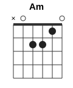
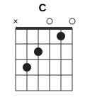
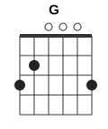
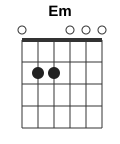
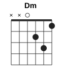

Abuelito Fuego
Snimshai & Susana · Todo Brilla
Каподастр: 5 лад
Размер: 6/8
Темп: ~60 (один такт ≈ 2 сек)





Бой — один такт = 6 счётов
| 1 | 2 | 3 | | 4 | 5 | 6 |
| ↓ | · | ↑ | | ↓ | ↑ | · |
| > бас | | тихо | | > бас | тихо | |
На слух: БУМ — та БУМ-та —, и так по кругу. Вниз по всем струнам на 1 и 4, вверх лёгкие по верхним струнам на 3 и 5. На точках рука не останавливается, просто проходит мимо струн.
Если пока сложно: только ↓ · · ↓ · · (на 1 и 4), потом добавить вверх.
Куплет — каждая строка поётся два раза
Припев — ×2
Порядок
В куплете меняется только обращение, аккорды те же. После каждого куплета припев.
1. Abuelito Fuego → 2. Madrecita Tierra → 3. Hermanito Viento (?) → 4. Padrecito Cielo → 5. Madrecita Tierra → 6. A las medicinas (les damos) → 7. A los abuelitos (les damos) → 8. Madrecita Tierra → Финал: припев по кругу, в конце один удар на Am